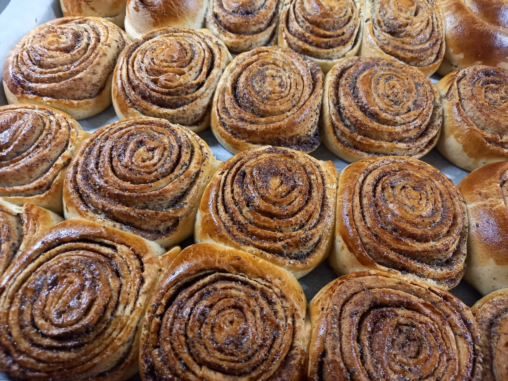

Kaneelirullid

Taigen
|
Koostisosad
|
Kogused
|
| Pärm |
50g |
| Vesi |
50dl |
| Või |
50g |
| Piim |
3dl |
| Sool |
0,5tl |
| Suhkur |
85g |
| Kardemon |
1tl |
| Nisujahu |
600g |
Täidis
| Koostisosad |
Kogused |
| Või |
100g |
| Suhkur |
85g |
| Kaneel |
0,5sl |
Valmistamine
- Lahusta pärm soojas vees
- Sulata või väikeses kausis.
- Lisa toasoe piim ja vala käesoe segu pärmi hulka.
- Sega juurde sool, suhkur ja kardemon.
- Sõtku vähehaaval juurde jahu, kuni saad ühtlase taina.
- Kata tainakauss kilega või rätikuga ja lase soojas kohas tund aega kerkida.
- Valmista täidis: sega sulavõi, suhkur ja kaneel.
- Sõtku tainas kergelt jahusel laual läbi, jaota kolmeks. Rulli iga osa 23x30 cm nelinurgaks.
- Määri täidisega (vajadusel valmista täidist juurde) ja keera rulli, alustades laiemast servast.
- Lõika rull 2-3 cm paksusteks viiludeks ja aseta saiad ahjuplaadile. Kata puhta rätikuga ja lase soojas veel umbes 20-30 minutit kerkida.
- Küpseta 200-225kraadises ahjus 10-15 minutit.
- Naudi! ❤